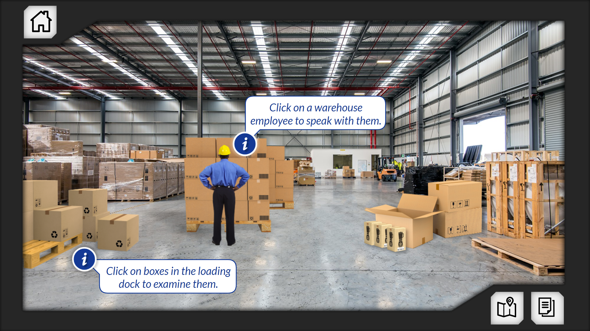
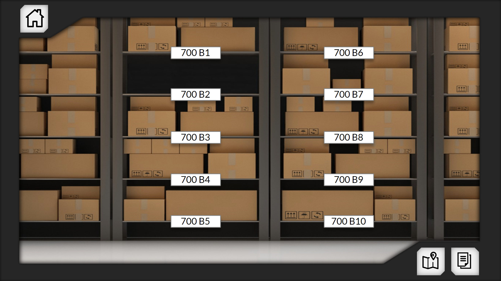
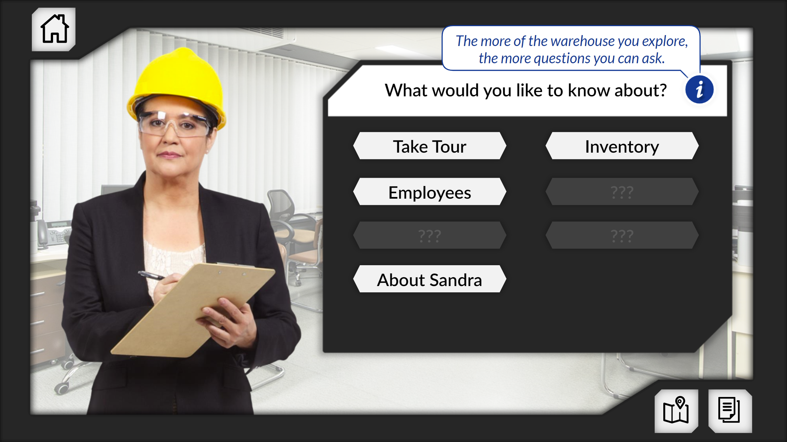

Accessible simulation · Nova Southeastern University
Kitchen Cordon Bleu
Turning a complex inventory audit into an explorable, narrative learning experience—and an accessible alternative to VR.

The challenge
Create an accessible alternative to a virtual-reality inventory audit without reducing the task to a passive accommodation.
The experience
Learners act as junior auditors: reviewing client information, sampling inventory, completing workpapers, and recommending next steps.
What I built
The simulation includes 240 boxes, Basic and Advanced modes, list-to-floor and floor-to-list approaches, explorable warehouse areas, and interactive employee dialogue.
Accessibility
Designed from the beginning for compatibility with JAWS and NVDA screen readers—not retrofitted after the experience was complete.
Inside the simulation


